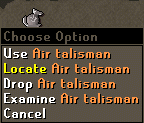
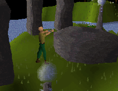

Runecraft Skill Guide
Runecraft is used to make different sorts of Runes, for use in Magic. Before you can use runecraft you will need to complete the Rune Mysteries quest.
Mining rune essences
The location of the source of Rune essence is a closely guarded secret, so you will need to find various NPCs around the game world to take you to it.| Once there, you can click on the large essence stones to mine them with a pickaxe (see Mining). You then need to take the essences you have mined to an elemental temple to turn these essences into magical runes. |
These temples are hidden throughout RuneScape, but you can locate them with the help of a runecraft talisman. Some examples of talismans are shown in the table below.
These first talismans can be found as fairly common drops from various NPCs, but the whereabouts of the higher levelled talismans will need to be discovered by those wishing to use them...
Locating rune temples
| To locate each temple, take the talisman and select the locate option. The talisman will pull in the direction where the rune temple is located. Because runecraft is an ancient skill that has been forgotten until recently, the elemental temples have become ruined. When you find the ruins of the temple you are looking for, use your talisman on these ruins. |
 |
 |
This will magically teleport you to a restored version of the temple, where you will be able to convert your rune essences into rune stones.
When you have finished crafting your runes, click on the glowing portal to return to the ruins where you entered the temple. |
The following table shows what levels are required to runecraft various runes.
| Level | Rune | Talisman | Altar Location |
|---|---|---|---|
| 1 | South of Falador | ||
| 2 | Between Ice Moutain and Goblin Village | ||
| 5 | In Lumbridge Swamp | ||
| 9 | North-east of Varrock | ||
| 14 | North-east of Al Kharik, outside the Duel Arena entrance | ||
| 20 | Between Ice Moutain and Barbarian Village | ||
| 27 | Southern part of Zanaris. Requires completing Lost City | ||
| 35 | Level 9 wilderness, south-east of the Dark Warrior's Fortress | ||
| 44 | On Karamja, North of Shilo Village | ||
| 54 | On the island of Entrana |
As you advance through the levels of runecraft, you will become more adept at turning the raw materials of rune essence into runes. What this means is that as your increases you will be able to make more than one rune from each essence you bind.
At higher levels you can make up to 10 runes from a single essence, depending on the rune you are crafting.
| Rune | Level required for: | |||||||||
|---|---|---|---|---|---|---|---|---|---|---|
| 1x | 2x | 3x | 4x | 5x | 6x | 7x | 8x | 9x | 10x | |
| 1 | 11 | 22 | 33 | 44 | 55 | 66 | 77 | 88 | 99 | |
| 2 | 14 | 28 | 42 | 56 | 70 | 84 | 98 | |||
| 5 | 19 | 38 | 57 | 76 | 95 | |||||
| 9 | 26 | 52 | 78 | |||||||
| 14 | 35 | 70 | ||||||||
| 20 | 46 | 92 | ||||||||
| 27 | 59 | 92 | ||||||||
| 35 | 74 | |||||||||
| 44 | 91 | |||||||||
| 54 | ||||||||||